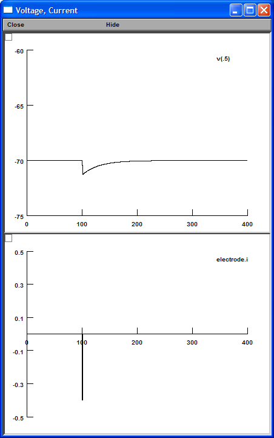
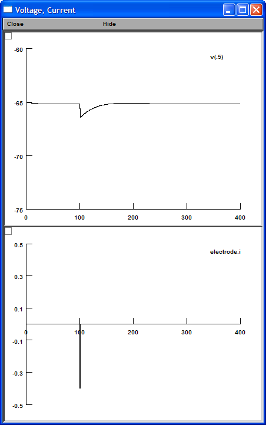
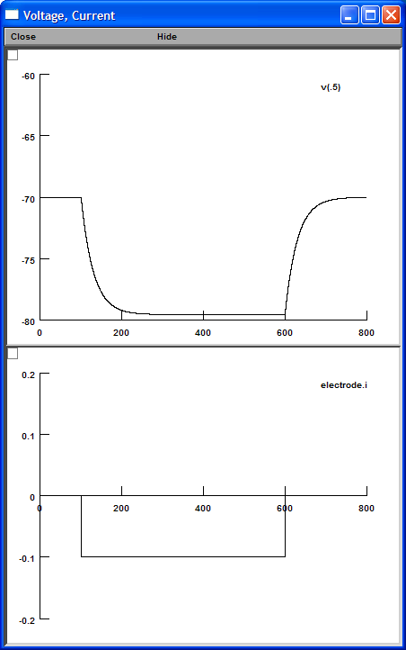
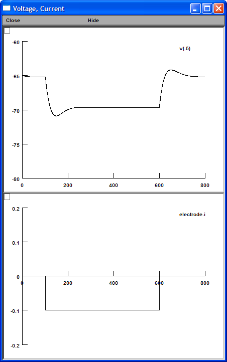
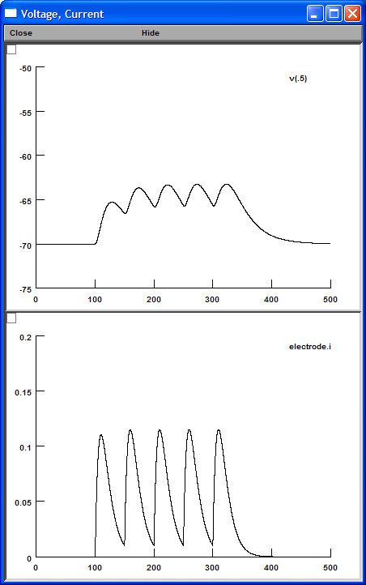
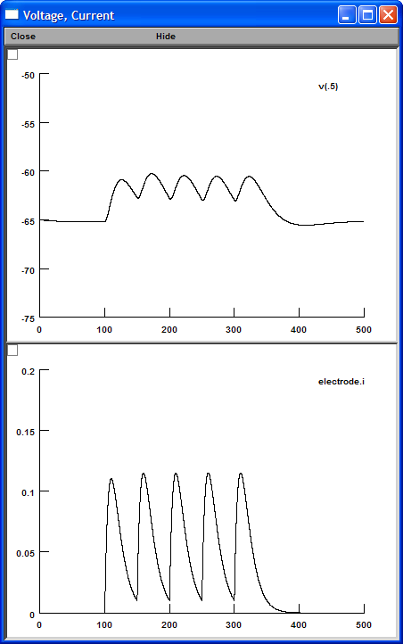

| Without Ih | With Ih |
| Membrane Time Constant | |
|
tau = 30 ms
 |
tau = 24 ms
 |
| Input Resistance | |
|
Rin = 95 MΩ Sag = 0 %  |
Rin = 45 MΩ Sag = 21 %  |
| Temporal Summation | |
|
Temporal Summation = 44%
 |
Temporal Summation = 8%
 |